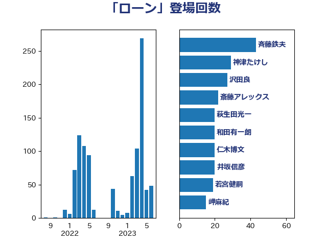

単語「ローン」

| 斉藤鉄夫 | 公明党 | 43 回 |
| 神津たけし | 立憲民主党 | 29 回 |
| 沢田良 | 日本維新の会 | 27 回 |
| 斎藤アレックス | 国民民主党 | 22 回 |
| 萩生田光一 | 自由民主党 | 20 回 |
| 和田有一朗 | 日本維新の会 | 20 回 |
| 仁木博文 | 無所属 | 20 回 |
| 井坂信彦 | 立憲民主党 | 20 回 |
| 若宮健嗣 | 自由民主党 | 19 回 |
| 岬麻紀 | 日本維新の会 | 15 回 |
| 岸田文雄 | 自由民主党 | 14 回 |
| 小沢雅仁 | 立憲民主党 | 14 回 |
| 佐々木紀 | 自由民主党 | 14 回 |
| 大島敦 | 立憲民主党 | 13 回 |
| 美延映夫 | 日本維新の会 | 11 回 |
| 浅川義治 | 日本維新の会 | 11 回 |
| 佐藤正久 | 自由民主党 | 11 回 |
| 青柳仁士 | 日本維新の会 | 10 回 |
| 輿水恵一 | 公明党 | 9 回 |
| 田島麻衣子 | 立憲民主党 | 9 回 |
| 重徳和彦 | 立憲民主党 | 7 回 |
| 西銘恒三郎 | 自由民主党 | 7 回 |
| 落合貴之 | 立憲民主党 | 7 回 |
| 稲富修二 | 立憲民主党 | 7 回 |
| 渡辺周 | 立憲民主党 | 7 回 |
| 三浦信祐 | 公明党 | 7 回 |
| 横山信一 | 公明党 | 6 回 |
| 掘井健智 | 日本維新の会 | 6 回 |
| 小野田紀美 | 自由民主党 | 6 回 |
| 住吉寛紀 | 日本維新の会 | 6 回 |
| 中川康洋 | 公明党 | 6 回 |
| 一谷勇一郎 | 日本維新の会 | 6 回 |
| 高市早苗 | 自由民主党 | 5 回 |
| 鈴木義弘 | 国民民主党 | 5 回 |
| 野村哲郎 | 自由民主党 | 5 回 |
| 谷田川元 | 立憲民主党 | 5 回 |
| 白石洋一 | 立憲民主党 | 5 回 |
| 櫛渕万里 | れいわ新選組 | 5 回 |
| 有村治子 | 自由民主党 | 5 回 |
| 早坂敦 | 日本維新の会 | 5 回 |
| 広瀬めぐみ | 自由民主党 | 5 回 |
| 岩谷良平 | 日本維新の会 | 5 回 |
| 山際大志郎 | 自由民主党 | 5 回 |
| 小熊慎司 | 立憲民主党 | 5 回 |
| 鳩山二郎 | 自由民主党 | 4 回 |
| 音喜多駿 | 日本維新の会 | 4 回 |
| 青山大人 | 立憲民主党 | 4 回 |
| 鈴木俊一 | 自由民主党 | 4 回 |
| 金子恭之 | 自由民主党 | 4 回 |
| 西田実仁 | 公明党 | 4 回 |
| 西村康稔 | 自由民主党 | 4 回 |
| 浅田均 | 日本維新の会 | 4 回 |
| 斎藤洋明 | 自由民主党 | 4 回 |
| 川崎ひでと | 自由民主党 | 4 回 |
| 山添拓 | 日本共産党 | 4 回 |
| 山井和則 | 立憲民主党 | 4 回 |
| 小野泰輔 | 日本維新の会 | 4 回 |
| 宮本岳志 | 日本共産党 | 4 回 |
| 宮崎勝 | 公明党 | 4 回 |
| 高木陽介 | 公明党 | 3 回 |
| 里見隆治 | 公明党 | 3 回 |
| 赤木正幸 | 日本維新の会 | 3 回 |
| 谷公一 | 自由民主党 | 3 回 |
| 芳賀道也 | 国民民主党 | 3 回 |
| 福島伸享 | 無所属 | 3 回 |
| 石川香織 | 立憲民主党 | 3 回 |
| 矢倉克夫 | 公明党 | 3 回 |
| 田村貴昭 | 日本共産党 | 3 回 |
| 猪瀬直樹 | 日本維新の会 | 3 回 |
| 熊谷裕人 | 立憲民主党 | 3 回 |
| 浜田靖一 | 自由民主党 | 3 回 |
| 林芳正 | 自由民主党 | 3 回 |
| 松川るい | 自由民主党 | 3 回 |
| 杉本和巳 | 日本維新の会 | 3 回 |
| 小山展弘 | 立憲民主党 | 3 回 |
| 塩田博昭 | 公明党 | 3 回 |
| 国光あやの | 自由民主党 | 3 回 |
| 吉良よし子 | 日本共産党 | 3 回 |
| 佐藤啓 | 自由民主党 | 3 回 |
| 中司宏 | 日本維新の会 | 3 回 |
| 鬼木誠 | 立憲民主党 | 2 回 |
| 高橋千鶴子 | 日本共産党 | 2 回 |
| 階猛 | 立憲民主党 | 2 回 |
| 阿部弘樹 | 日本維新の会 | 2 回 |
| 金城泰邦 | 公明党 | 2 回 |
| 赤羽一嘉 | 公明党 | 2 回 |
| 緑川貴士 | 立憲民主党 | 2 回 |
| 篠原豪 | 立憲民主党 | 2 回 |
| 福田昭夫 | 立憲民主党 | 2 回 |
| 福島みずほ | 社会民主党 | 2 回 |
| 牧島かれん | 自由民主党 | 2 回 |
| 浅野哲 | 国民民主党 | 2 回 |
| 武部新 | 自由民主党 | 2 回 |
| 櫻井周 | 立憲民主党 | 2 回 |
| 森本真治 | 立憲民主党 | 2 回 |
| 木原稔 | 自由民主党 | 2 回 |
| 新妻秀規 | 公明党 | 2 回 |
| 徳永エリ | 立憲民主党 | 2 回 |
| 岸真紀子 | 立憲民主党 | 2 回 |
| 岡田直樹 | 自由民主党 | 2 回 |
| 山本剛正 | 日本維新の会 | 2 回 |
| 小田原潔 | 自由民主党 | 2 回 |
| 小林鷹之 | 自由民主党 | 2 回 |
| 安江伸夫 | 公明党 | 2 回 |
| 大島九州男 | れいわ新選組 | 2 回 |
| 吉良州司 | 無所属 | 2 回 |
| 井野俊郎 | 自由民主党 | 2 回 |
| 串田誠一 | 日本維新の会 | 2 回 |
| 中川郁子 | 自由民主党 | 2 回 |
| 下条みつ | 立憲民主党 | 2 回 |
| 鶴保庸介 | 自由民主党 | 1 回 |
| 高木かおり | 日本維新の会 | 1 回 |
| 須藤元気 | 無所属 | 1 回 |
| 鈴木英敬 | 自由民主党 | 1 回 |
| 鈴木敦 | 国民民主党 | 1 回 |
| 鈴木宗男 | 日本維新の会 | 1 回 |
| 金子道仁 | 日本維新の会 | 1 回 |
| 野田国義 | 立憲民主党 | 1 回 |
| 道下大樹 | 立憲民主党 | 1 回 |
| 進藤金日子 | 自由民主党 | 1 回 |
| 豊田俊郎 | 自由民主党 | 1 回 |
| 角田秀穂 | 公明党 | 1 回 |
| 西岡秀子 | 国民民主党 | 1 回 |
| 藤巻健太 | 日本維新の会 | 1 回 |
| 藤岡隆雄 | 立憲民主党 | 1 回 |
| 若松謙維 | 公明党 | 1 回 |
| 舩後靖彦 | れいわ新選組 | 1 回 |
| 穀田恵二 | 日本共産党 | 1 回 |
| 石井章 | 日本維新の会 | 1 回 |
| 石井浩郎 | 自由民主党 | 1 回 |
| 田畑裕明 | 自由民主党 | 1 回 |
| 田村智子 | 日本共産党 | 1 回 |
| 田所嘉徳 | 自由民主党 | 1 回 |
| 田中健 | 国民民主党 | 1 回 |
| 甘利明 | 自由民主党 | 1 回 |
| 玄葉光一郎 | 立憲民主党 | 1 回 |
| 牧山ひろえ | 立憲民主党 | 1 回 |
| 片山さつき | 自由民主党 | 1 回 |
| 熊田裕通 | 自由民主党 | 1 回 |
| 渡辺博道 | 自由民主党 | 1 回 |
| 泉健太 | 立憲民主党 | 1 回 |
| 池畑浩太朗 | 日本維新の会 | 1 回 |
| 水野素子 | 立憲民主党 | 1 回 |
| 比嘉奈津美 | 自由民主党 | 1 回 |
| 森屋隆 | 立憲民主党 | 1 回 |
| 梅村みずほ | 日本維新の会 | 1 回 |
| 柳本顕 | 自由民主党 | 1 回 |
| 柳ヶ瀬裕文 | 日本維新の会 | 1 回 |
| 松野明美 | 日本維新の会 | 1 回 |
| 松野博一 | 自由民主党 | 1 回 |
| 村田享子 | 立憲民主党 | 1 回 |
| 杉久武 | 公明党 | 1 回 |
| 日下正喜 | 公明党 | 1 回 |
| 斎藤嘉隆 | 立憲民主党 | 1 回 |
| 平沼正二郎 | 自由民主党 | 1 回 |
| 川田龍平 | 立憲民主党 | 1 回 |
| 山本佐知子 | 自由民主党 | 1 回 |
| 山崎正恭 | 公明党 | 1 回 |
| 尾身朝子 | 自由民主党 | 1 回 |
| 小泉進次郎 | 自由民主党 | 1 回 |
| 小森卓郎 | 自由民主党 | 1 回 |
| 小林史明 | 自由民主党 | 1 回 |
| 宮下一郎 | 自由民主党 | 1 回 |
| 奥野総一郎 | 立憲民主党 | 1 回 |
| 大野敬太郎 | 自由民主党 | 1 回 |
| 大西健介 | 立憲民主党 | 1 回 |
| 大石あきこ | れいわ新選組 | 1 回 |
| 大塚拓 | 自由民主党 | 1 回 |
| 塩村あやか | 立憲民主党 | 1 回 |
| 堀井学 | 自由民主党 | 1 回 |
| 城井崇 | 立憲民主党 | 1 回 |
| 古川元久 | 国民民主党 | 1 回 |
| 前原誠司 | 国民民主党 | 1 回 |
| 保岡宏武 | 自由民主党 | 1 回 |
| 伴野豊 | 立憲民主党 | 1 回 |
| 伊佐進一 | 公明党 | 1 回 |
| 今枝宗一郎 | 自由民主党 | 1 回 |
| 中谷真一 | 自由民主党 | 1 回 |
| 中西祐介 | 自由民主党 | 1 回 |
| 中村裕之 | 自由民主党 | 1 回 |
| 上野通子 | 自由民主党 | 1 回 |
| 三上えり | 立憲民主党 | 1 回 |
| ながえ孝子 | 無所属 | 1 回 |